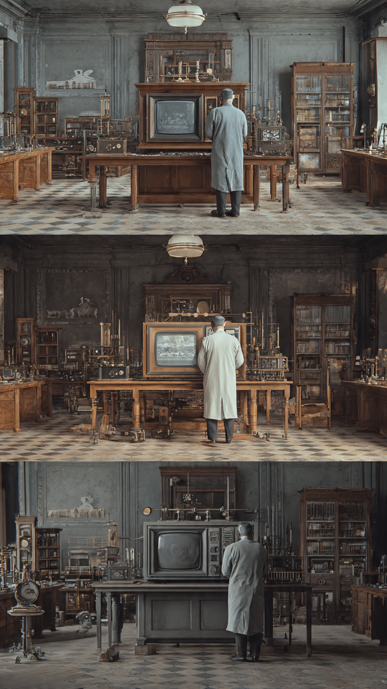

```html
الخطأ الصغير الذي اخترع جهازًا يطبخ الطعام في ثوانٍ | اكتشافات وعلوم
```
كان يومًا عاديًا في صيف عام 1945.
داخل أحد معامل شركة أمريكية متخصصة في التقنيات العسكرية، وقف المهندس بيرسي سبنسر أمام جهاز ضخم يصدر طنينًا متواصلًا.
كان يعمل على تطوير أجهزة الرادار التي استُخدمت خلال الحرب العالمية الثانية، ولم يكن يتوقع أن هذا اليوم سيغيّر طريقة طهي الطعام في العالم كله.
لم يكن سبنسر عالمًا جاء من جامعة مرموقة.
بل كانت حياته مليئة بالصعوبات منذ طفولته.
فقد والده وهو صغير، واضطر إلى العمل في سن مبكرة ليساعد أسرته، وتعلّم معظم ما يعرفه بنفسه من الكتب والتجارب.
وبمرور السنوات، أصبح واحدًا من أمهر المهندسين في مجاله.
في ذلك اليوم، كان يختبر جهازًا يسمى الماجنترون.
وهو أنبوب إلكتروني يولد موجات دقيقة تُستخدم في أنظمة الرادار.
كانت هذه الموجات غير مرئية، ولا يمكن للإنسان رؤيتها أو الشعور بها بشكل مباشر.
لكنها كانت تحمل كمية كبيرة من الطاقة.
وبينما كان يقف بالقرب من الجهاز، شعر بشيء غريب.
مد يده إلى جيبه ليخرج قطعة شوكولاتة كان يحتفظ بها منذ الصباح.
لكنه فوجئ بأنها أصبحت طرية للغاية.
وبعد لحظات...
بدأت تذوب بالكامل داخل الغلاف.
توقف سبنسر في مكانه.
نظر إلى الشوكولاتة.
ثم إلى الجهاز.
ثم أعاد النظر إلى الشوكولاتة مرة أخرى.
لم تكن درجة حرارة الغرفة مرتفعة.
ولم يضعها قرب نار أو مصدر حرارة.
إذن...
ما الذي جعلها تذوب بهذه السرعة؟
كان بإمكانه أن يتجاهل ما حدث ويعتبره مجرد مصادفة.
لكن العلماء الحقيقيين لا يتجاهلون الملاحظات الصغيرة.
بل يبدأ كل اكتشاف عظيم بسؤال بسيط.
ولهذا قرر سبنسر أن يعيد التجربة...
لكن هذه المرة، بطريقة لم يتوقع أحد نتائجها.
📷 الصورة رقم 1
في صباح اليوم التالي، عاد بيرسي سبنسر إلى المختبر وهو يفكر في الشوكولاتة التي ذابت داخل جيبه.
كان يعلم أن ما حدث لا يمكن أن يكون مجرد صدفة.
فلو كانت الحرارة في الغرفة هي السبب، لذابت أشياء أخرى أيضًا.
لكن الذي تأثر هو الشوكولاتة وحدها، لأنها كانت أقرب إلى جهاز الماجنترون.
قرر أن يبدأ سلسلة من التجارب البسيطة.
أحضر حفنة من حبوب الذرة الجافة، ووضعها أمام الجهاز، ثم شغّل الموجات لبضع ثوانٍ.
في البداية...
لم يحدث شيء.
ثم فجأة...
بدأت الحبوب تقفز في كل اتجاه، وانفجرت الواحدة تلو الأخرى، وامتلأت الغرفة بالفشار الساخن.
وقف زملاؤه في المختبر ينظرون بدهشة.
لم يسبق لأحد أن رأى الطعام يُطهى بهذه الطريقة.
ابتسم سبنسر.
لقد تأكد أن الموجات لا تذيب الشوكولاتة فقط، بل تنقل الطاقة مباشرة إلى الطعام.
لكن الفضول لم يتوقف عند هذا الحد.
كان يريد أن يعرف مدى قوة هذه الموجات.
في اليوم نفسه، أحضر بيضة طازجة.
ووضعها داخل وعاء صغير أمام الجهاز.
تجمع عدد من المهندسين حوله لمشاهدة التجربة.
مرّت ثوانٍ قليلة فقط...
ثم حدث ما لم يتوقعه أحد.
انفجرت البيضة بقوة، وتناثرت محتوياتها في أنحاء المختبر، بينما غطى صفارها وجوه بعض الواقفين.
ساد الصمت للحظة...
ثم انفجر الجميع ضاحكين.
لكن سبنسر لم يكن يضحك بسبب الموقف.
بل لأنه أدرك أنه يقف أمام اكتشاف قد يغيّر حياة ملايين البشر.
بدأ يجري عشرات التجارب على أطعمة مختلفة.
كان يلاحظ أن بعض الأطعمة تسخن بسرعة، بينما يحتاج بعضها الآخر إلى وقت أطول.
ومع كل تجربة، كان يفهم أكثر كيف تتفاعل جزيئات الماء داخل الطعام مع الموجات الدقيقة.
لقد اكتشف أن هذه الموجات تجعل جزيئات الماء تهتز بسرعة هائلة، فتنتج حرارة من داخل الطعام نفسه، وليس من خارجه كما يحدث في الأفران التقليدية.
كانت الفكرة ثورية.
فبدلًا من تسخين الهواء أو النار للطعام...
أصبح الطعام هو الذي يولد الحرارة في داخله.
لكن بقي سؤال واحد...
هل يمكن تحويل هذه التجربة الغريبة إلى جهاز يستخدمه الناس في منازلهم؟
📷 الصورة رقم 2

بعد أشهر طويلة من التجارب، تأكد بيرسي سبنسر أن ما اكتشفه ليس مجرد ظاهرة غريبة داخل المختبر، بل تقنية يمكن أن تغيّر طريقة طهي الطعام بالكامل.
قدّم فكرته إلى الشركة التي يعمل بها، وبدأ المهندسون في تصميم أول جهاز يعتمد على الموجات الدقيقة لطهي الطعام.
لكن النموذج الأول لم يكن يشبه أجهزة الميكروويف التي نعرفها اليوم.
كان الجهاز ضخمًا للغاية.
بلغ ارتفاعه أكثر من متر ونصف، ووزنه مئات الكيلوجرامات، وكان يحتاج إلى نظام تبريد خاص، كما أن سعره كان مرتفعًا جدًا، لذلك استُخدم في البداية داخل المطاعم الكبيرة والسفن والمستشفيات، ولم يكن مناسبًا للمنازل.
ورغم ذلك، كانت الفكرة قد نجحت.
وأثبتت أن الطعام يمكن أن يُطهى في دقائق، بل أحيانًا في ثوانٍ.
ومع تطور التكنولوجيا خلال العقود التالية، أصبح جهاز الميكروويف أصغر حجمًا، وأقل استهلاكًا للطاقة، وأكثر أمانًا.
ثم بدأ يدخل البيوت في مختلف أنحاء العالم.
واليوم، يوجد في ملايين المطابخ، ويستخدمه الناس يوميًا لتسخين الطعام وإعداده بسرعة، دون أن يعرف كثيرون أن بدايته كانت قطعة شوكولاتة ذابت داخل جيب مهندس فضولي.
ومن الطريف أن بيرسي سبنسر لم يكن يبحث عن وسيلة جديدة للطهي أصلًا.
كان يعمل على تطوير أجهزة الرادار، لكن فضوله العلمي جعله يتوقف أمام ملاحظة صغيرة كان من الممكن أن يتجاهلها أي شخص آخر.
ولو حدث ذلك...
ربما تأخر اختراع الميكروويف سنوات طويلة.
لقد أثبتت هذه القصة أن الاكتشافات العظيمة لا تأتي دائمًا بعد خطط معقدة.
أحيانًا تبدأ من موقف بسيط، أو خطأ غير مقصود، أو سؤال يطرحه شخص يرفض أن يمر على الأشياء دون أن يفهمها.
ولهذا يُعد اختراع فرن الميكروويف واحدًا من أشهر الاكتشافات التي وُلدت بالصدفة، لكنه لم يكن ليصبح حقيقة لولا عقل فضولي آمن بأن كل ملاحظة، مهما بدت صغيرة، قد تخفي وراءها فكرة تغيّر العالم.